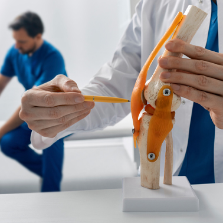

GIUNCHAN PAIN CLINIC
수술만이 정답은 아닙니다.
비수술 척추 · 관절 치료시스템
안녕하세요. 기운찬마취통증의학과 대표원장 노용성입니다.
척추, 관절 질환이라 하면 수술을 먼저 떠올리지만,
실제로 수술이 필요한 경우는 드물며, 대부분 비수술적 치료를 통해 호전 가능합니다.
기운찬마취통증의학과의원은 환자 개개인마다 다른
다양한 통증의 원인을 분석하고 근본적인 원인을 찾아 그에 맞는 맞춤형 치료를 통해
빠르게 통증없는 일상으로 복귀 할 수 있도록 도와드립니다.
여러분의 편안한 일상생활을 약속드립니다.
기운찬마취통증의학과 대표원장 노 용 성
통증! 더 이상 참지 마세요! [ 기운찬마취통증의학과 진료과목 ]
-
척추관절클리닉
척추관협착증 목/허리디스크 퇴행성관절염 관절통 어깨충돌증후군 수근관증후군
-
특수치료 클리닉
만성관절통증 어깨통증 만성통증과 질환 이상건증후군 대퇴비구충돌증후군 족저근막염
-
스포츠클리닉
외상과염 / 내상과염 (테니스엘보)
-

류마티스클리닉
관절 류마티스 관절염 수부 류마티스 관절염 강직성 척추염 통풍
-
교통사고클리닉
GIUNCHAN PAIN CLINIC
노 용 성 대표원장
- 마취통증의학과 전문의
- 여수전남병원 부원장
- 발산정형외과 부원장
- 대한마취과학회 정회원
- 대한통증학회 정회원
- 대한척추통증학회 정회원
- 대한도수의학회 회원
- 대한통증학회 tpi 교육 이수
GIUNCHAN PAIN CLINIC 기운찬 비수술적치료법
허리와 어깨, 무릎 등 각 부위별 통증에 대한 단순 치료개념을 넘어 환자분들의 전한 회복을 위해 근본적인 원인을 항상 고민하며, 환자분들께 최적화된 치료와 시술을 제공하기 위해 노력합니다.
- 수액 클리닉
- 프롤로 주사
- 특수영상 정밀주사 (C-ARM)
- 추음파유도 정밀시술
- 도수치료
수액클리닉
기운찬의 수액클리닉이란?
부족한 영양소는 음식과 영양제만으로는 충족시킬 수 없어 신체에 불균형이 나타나기도 하는데, 사람들마다 부족한 영양요소를 개인의 상태에 따라 혈관을 통해 직접 공급하는 수액치료의 주요성은 높아지고 있습니다.
프롤로주사
기운찬의 프롤로주사는?
특정질환에 의해 손상되거나 통증을 유발하는 원인이 되는 부위를 새롭게 재생시켜주는 치료법으로 DNA주사, 콜라겐 주사, 태반주사, 고농축포도당 약물 등이 사용됩니다.
특수영상정밀주사 (C-ARM)
기운찬의 특수영상정밀주사(C-ARM)는?
정확한 부위에 바늘을 꽂아 약물을 투여하는 것이 중요하기 때문에 시술하는 의료진의 치료 경험이나 테크닉이 중요합니다.
초음파유도정밀시술
기운찬의 초음파유도정밀시술은?
도수치료
기운찬의 도수치료는?
통증 감소 뿐만 아니라 통증의 근본적 원인을 찾아 치료하므로 근골격계 질환에 뛰어난 효과가 있습니다.